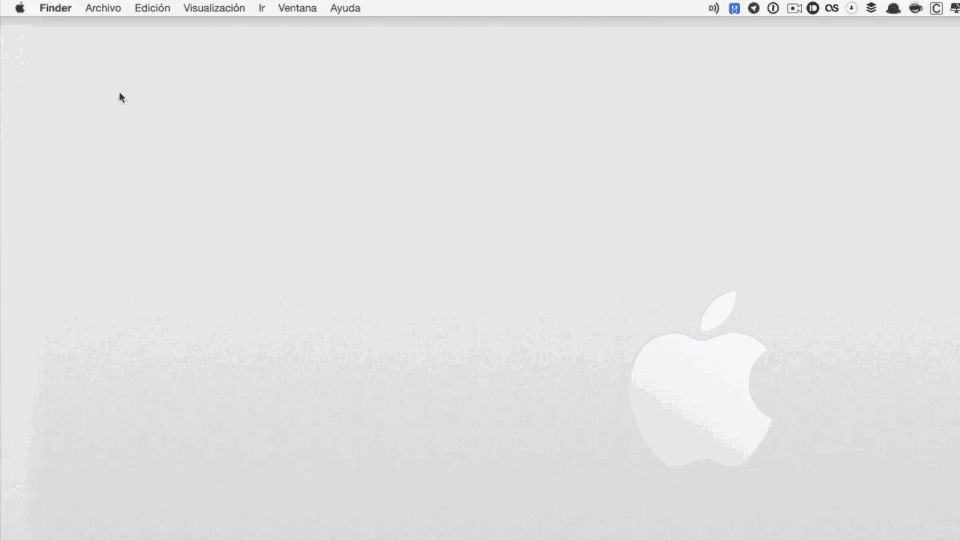

De todas las posibles ampliaciones que podemos realizar a un Mac, la de la memoria RAM es, sin duda, una de las ampliaciones más recomendables, más fácil de hacer y, quizás, la más asequible de todas.
Poder abrir aplicaciones con rapidez, cambiar de una aplicación a otra con fluidez, tener varias aplicaciones abiertas sin que nuestro Mac vaya lento…son sólo algunas de las ventajas que tiene ampliar la memoria RAM a un Mac. Hoy os presentamos una extensa guía que hemos preparado con todo lo que necesitas saber acerca de la memoria RAM en un Mac, aumentando así el número de guías disponibles en nuestro blog.
Como se trata de una guía extensa, aquí tenéis todos los temas que vamos a tratar:
1. Cómo identificar tu modelo de Mac.
2. Cómo saber cuánta memoria RAM tienes instalada.
3. Qué es la RAM.
4. Cómo gestiona la RAM tu Mac.
5. Por qué necesitas más RAM.
6. Cuánta RAM necesitas.
7. Cómo comprobar si la memoria RAM de tu Mac está en mal estado.
8. Cómo escoger la RAM, con tablas de compatibilidad para todos los modelos de Mac que han salido al mercado. MacBook, MacBook Retina, MacBook Pro, MacBook Pro retina, MacBook Air, iMac, Mac Mini o Mac Pro.
Apple nombra a sus equipos en función del momento de su lanzamiento, dividiendo el año en 3 partes. Así, tu equipo puede estar fabricado "a principios de…" (Early…), "a mediados de…" (Mid…) o "a finales de…" (Late…), y esa es también la nomenclatura que utilizamos nosotros para mostrar la compatibilidad de todos los accesorios y kits de ampliación.
La nomenclatura incluye también diferencias en función de la pantalla, pudiendo existir, por ejemplo, un MacBook Pro 13" Mid 2012 y un MacBook Pro 15" Mid 2012.
Pero la forma de saber qué modelo de Mac tienes exactamente es la siguiente:
1. Clic en el menú de la Manzana.
2. Clic en "Acerca de este Mac".
3. En la ventana que se abrirá, justo debajo de la versión del sistema operativo, encontrarás el modelo exacto de Mac, con la siguiente estructura:
Tipo de ordenador + (pulgadas de pantalla + fecha lanzamiento)
Si necesitas saber cuánta memoria RAM tiene instalada tu Mac y en cuántos módulos está repartida (incluso saber cuántas ranuras tienes libres, si es que queda alguna) deberás seguir estos pasos:
1. Clic en el menú de la Manzana.
2. Clic en "Acerca de este Mac".
3. Clic en "Informe del sistema".
4. Clic en "Memoria", en el menú de la izquierda.
En la ventana que se te abrirá verás cuántas ranuras de memoria tiene tu Mac y cuántas están ocupadas. En las que están ocupadas verás información del tipo de RAM que tienes instalada, información que consta de las siguientes características, que son las que debes buscar en los módulos que compres para ampliar:
- Tamaño, expresado en GB.
- Tipo, expresado como DDR2, DDR3…
- Velocidad, expresado en MHz (667 MHz, 800 MHz, 1066 MHz, 1333 MHz o 1600 MHz).
Respuesta corta:
Es donde nuestro Mac guarda los datos que está utilizando en el momento. Este almacenamiento se considera temporal porque los datos y programas permanecen en ella mientras que el Mac esté encendido (o matemos los procesos).
Respuesta extendida:
Memoria RAM, siglas de Random-Access Memory (Memoria de acceso aleatorio), y el nombre que se da comúnmente a los módulos que van instalados en cualquier Mac, los cuales son una variedad de la llamada "Memoria de acceso aleatorio".
Estos módulos son unas tarjetas que tienen soldados unos chips de memoria DRAM (Dynamic Random Access Memory) y que se conectan a nuestros Macs por medio de una plaquita de pines que llevan en uno de los lados del circuito impreso. Estas tarjetas o placas se instalan en las ranuras de nuestros Macs dispuestas a tal fin.
Con el tiempo se crearon unos estándares en la industria para este tipo de conexión, creando distintos módulos entre los cuales encontramos los que utilizan los equipos Mac:
DIMM,solían ser habituales en equipos de escritorio.
SO-DIMM,formato que utilizan los Mac portátiles, los iMac o los Mac Mini.
FB-DIMM,formato que utilizan algunos Mac Pro.
La memoria RAM aloja las utilidades y datos que ejecutas en un determinado momento. Por ejemplo, el documento de Pages o de Numbers con el que trabajas o esa página web por la que estás navegando en Safari.
A diferencia de la "memoria" que supone el almacenamiento de un disco duro, la memoria RAM borra su contenido al apagar el Mac o al finalizar los procesos abiertos.
La ventaja que ofrece la memoria RAM frente a cualquier tipo de memoria es su gran velocidad de acceso, tanto en lectura como en escritura. Por eso la memoria RAM es la gran culpable de que una aplicación se abra rápida (o lenta, dependiendo de la cantidad de RAM que tengamos instalada).
OS X Mavericks incorporó una serie de mejoras en el rendimiento del sistema, entre las cuales se encontraba una mejor optimización y gestión de la memoria RAM utilizada por nuestros Macs. Sólo por esa notable mejoría en la gestión de la memoria RAM os recomendamos actualizar a OS X Yosemite o Mavericks, siempre y cuando vuestro Mac sea compatible.
Si accedemos a la aplicación Monitor de Actividad, en la pestaña "Memoria", veremos información sobre cómo se está utilizando la memoria disponible de nuestros Macs:
Presión de memoria:Presentado en forma de gráfico, Presión de memoria ayuda a ilustrar la disponibilidad de todos los recursos de memoria. El gráfico se va moviendo de derecha a izquierda. El estado actual de los recursos de memoria del Mac se indica mediante el color que aparece en el gráfico:
Verde:los recursos de memoria están disponibles.
Amarillo:los recursos de memoria siguen estando disponibles, pero los procesos de gestión de la memoria les están asignando tareas como la compresión.
Rojo:se han agotado los recursos de memoria y OS X está utilizando la unidad de arranque como memoria. Para que haya más RAM disponible, puedes salir de una o varias aplicaciones o también puedes instalar más RAM. Has de saber que este es el indicio más importante de que nuestro Mac necesita más RAM.
Hay varios signos que ayudan a detectar que tu Mac necesita más memoria RAM. Uno de ellos lo veremos dando un simple vistazo al color de la presión de memoria en Monitor de Actividad, tal y como os acabamos de comentar.
Guía Especial memoria RAM para MacOtro elemento gráfico y bastante revelador es la aparición -constante- del famoso balón de playa. Cuando abres una aplicación, cuando intentas guardar un documento, al cambiar entre aplicaciones… Si ves el balón de playa demasiado a menudo en tu día a día es más que probable que lo que necesite tu equipo sea una mayor cantidad de memoria RAM.
La cantidad de memoria RAM que necesita tu Mac vendrá condicionada por el uso que le des a tu máquina. Puede parecer una obviedad. Incluso la edad de la máquina y el sistema operativo que esté corriendo también influirán. La misma máquina corriendo OS X Lion u OS X Yosemite funcionará de forma muy distinta. El nuevo Yosemite optimiza la memoria RAM disponible frente al devorador de memoria RAM que supuso Lion.
Así que si estás pensando en ampliar la RAM de tu Mac o en hacerte con un nuevo equipo, aquí te dejamos unas pautas a modo de referencia para que veas cuál es la cantidad mínima de RAM para cada uso, con algunos ejemplos:
4GB.Esta es la cantidad de memoria RAM que Apple monta en los equipos de entrada de gama, a excepción de algunos modelos de MacBook Pro o los nuevos MacBook. Suficiente para nuestro día a día si lo que hacemos es trabajar con documentos de texto, Office, navegar por internet, consultar correo o ver alguna que otra película. Cantidad suficiente, eso sí, si no nos dedicamos a hacer varias de estas cosas a la vez. Si esta cantidad de RAM está combinada con un disco SSD será suficiente. Por contra, si nuestro Mac usa un disco duro mecánico estos 4GB se convertirán en una cantidad más justa de RAM.
8GB.Apple ya incluye esta cantidad como mínimo en muchos de sus ordenadores. En la mayoría de situaciones 8GB sería la cantidad recomendable para trabajar con fluidez. Varias pestañas de Safari, varios navegadores, Mail o Photoshop a la vez…
Edición de vídeo con iMovie, Final Cut o trabajar tranquilo con la nueva aplicación Fotos son tareas que, prácticamente, requieren ya de 8GB de RAM instaladas en nuestro Mac.
16GB.En el momento de escribir esta guía, esta cantidad de memoria RAM sería para usuarios que quieren exprimir (no al máximo) sus ordenadores. Usuarios que se dediquen al diseño gráfico y necesiten tener abiertas, a la vez, varias aplicaciones como Photoshop, After Effects, Illustrator u otros. Esta cantidad de RAM sería muy útil también para los que usan máquinas virtuales para ejecutar otros sistemas operativos como Windows o algunas distribuciones de Linux.
32GB o más.Para usuarios que quieren sacar el máximo rendimiento a sus equipos. Si eres de los que hacen edición de vídeo o audio profesional esta es la cantidad ideal para trabajar sin problemas y poder realizar varias tareas a la vez.
Muchos se preguntan acerca del máximo de memoria RAM admitido por vuestro ordenador porque en la documentación de Apple indica una cantidad y nosotros otra (superior)
En la mayoría de los casos los equipos admiten más memoria RAM de la indicada por Apple en la fecha del lanzamiento del equipo.
En las siguientes tablas hemos indicado el máximo de memoria RAM real que admiten los equipos, aunque en la documentación inicial se indicase una cantidad inferior. Pero la cantidad que nosotros indicamos es la máxima, más allá de la que os decimos no la admitirán los ordenadores. Podéis instalar la cantidad de RAM que os indicamos sin ningún problema.
Llegados a este punto de la guía especial sobre cómo escoger RAM para Mac, ya sabes qué es la memoria RAM, cuánta memoria RAM tienes instalada en tu Mac y sabes cómo identificar el modelo exacto de Mac que tienes. Has aprendido (espero que entendido también) cómo gestiona la RAM tu Mac, has comprobado si la memoria de tu Mac está en mal estado y tienes claro por qué y cuánta memoria RAM necesitas. Así que es momento de ver cómo escoger la RAM correcta para tu Mac.
Con el modelo exacto de tu Mac apuntado te invito a que veas las siguientes tablas de compatibilidad que os hemos preparado, separadas por equipos, donde verás el identificador, el máximo de memoria RAM que admite el equipo así como el tipo de memoria y el número de módulos que tiene tu Mac.
Y recordad:
Si tu Mac lleva un tipo de RAM específico no intentes ponerle otro tipo distinto o podrás tener problemas.
Si lleva 1333MHz sólo puedes ponerle RAM de 1333MHz, ni más ni menos.